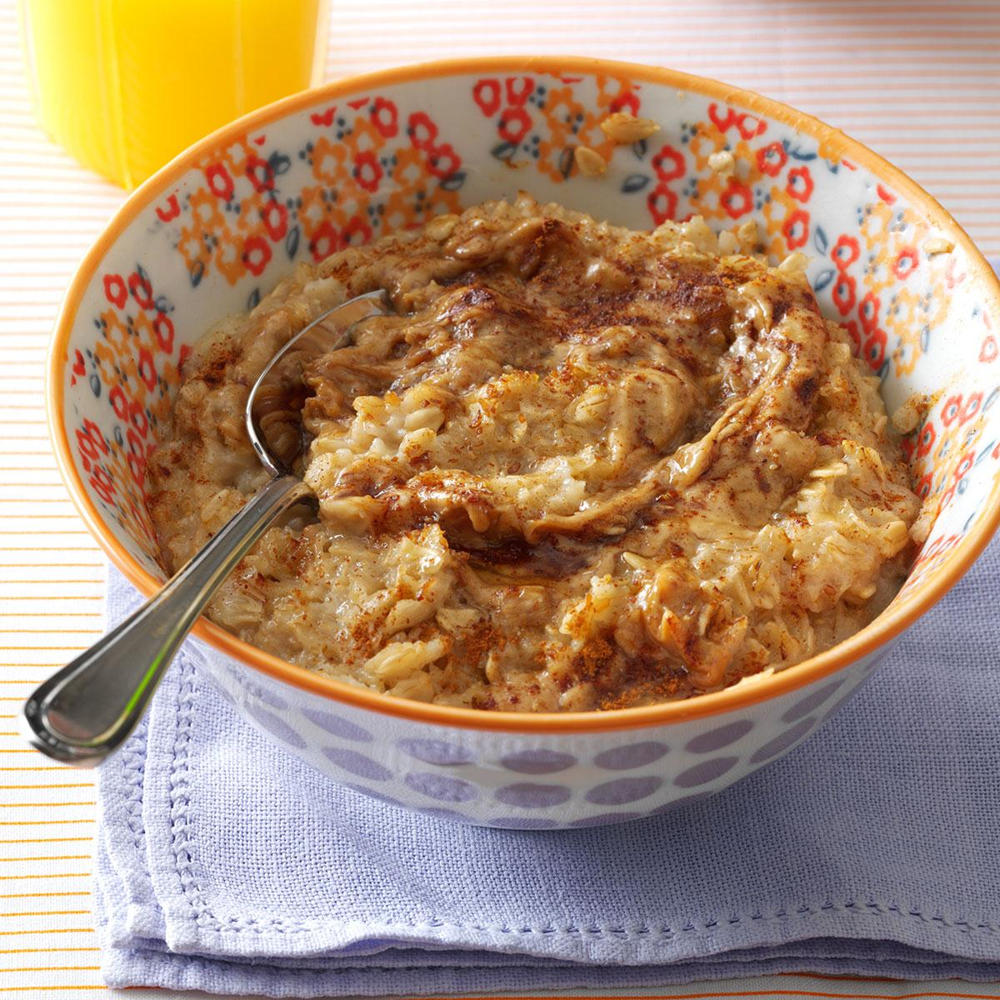

PEANUT BUTTER OATMEAL

Healthy and Filling!
This quick and easy peanut butter oatmeal, flavored with cinnamon and vanilla and topped with honey and walnuts, can be customized to your taste.
INGREDIENTS
- 1 cup 1% milk
- 1 tablespoon superfine sugar
- 1 pinch salt
- 1 pinch cinnamon
- 1/2 cup oats
- 1/2 teaspoon vanilla extract
- 1 tablespoon freshly ground peanut butter
- 2 teaspoons warmed honey
- 1 tablespoon chopped walnuts(optional)
STEPS
- Combine milk, sugar and salt in a saucepan over medium-low heat and bring to a simmer.
- Add cinnamon and oats. Cook over medium-low heat, for about 5 minutes. Stir constantly with a spoon.
- Remove from heat, stir in vanilla and peanut butter. Serve in a large bowl and top with honey and almonds.